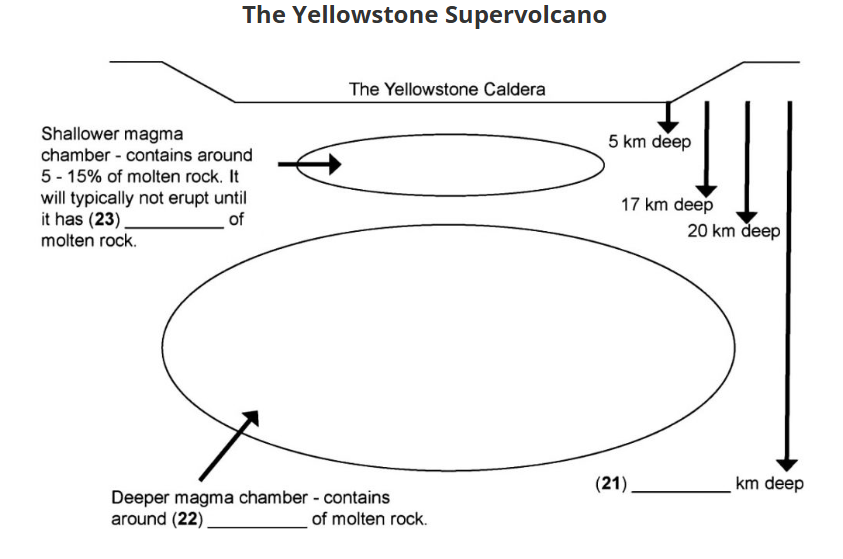

Passage 2: A New Threat in Yellowstone
It has long been known that Yellowstone National Park lies
over an enormous supervolcano. The term ‘supervolcano’ implies
a volcanic centre that has had an eruption of magnitude 8 on
the Volcano Explosivity Index (VEI), meaning the measured
deposits for that eruption are greater than 1,000 cubic
kilometres. This sounds worrying and Professor George Peters
details the possible results if something were to happen.
"A major eruption would obliterate the surroundings within
a radius of hundreds of kilometres, and cover the rest of
the United States and Canada with multiple inches of ash.
This would shut down agriculture and cause global climate
cooling for as long as a decade.” To calm everyone down,
geologist, Tony Masters, explains there is little to fear today.
"All VEI 8 eruptions, including the last at Yellowstone,
occurred tens of thousands to millions of years ago. Another
eruption could occur, but it is very unlikely to happen in
the next million years or so.”
Yellowstone is no stranger to controversy. There was a
previous media accusation that US Geological Survey (USGS)
geologists had not done their work properly and that the
identification of Yellowstone as a supervolcano was not done
until scientists looked at photographs of Yellowstone from
space. The Yellowstone scientists denied this. Spokesman Alice
Wheeler clarifies their position. "The scientist who first
identified the three Yellowstone calderas was from the USGS
and he told the world about the great eruptions that formed
them. He traced out the caldera boundaries through old
fashioned field work, walking around with a hammer and hand
lens and looking carefully at the rocks and their distributions.”
The National Aeronautics and Space Administration (NASA) also
agreed. Stan Forsyth, their spokesman, explains. "Several
authors have written that these large calderas in Yellowstone
were discovered from space, but we suspect that the rumour
probably got started because initial field work that identified
them was partly funded by NASA.”
A new problem in Yellowstone is that the supervolcano has now
been discovered to be larger than originally thought and this
has made people feel more nervous. Seismologists at the
University of Utah have worked with several other institutions
to create an image of the Yellowstone magma reservoir using
a technique called seismic tomography. Masters student, Julia
Grey, explains the results. "By looking closely at data from
thousands of earthquakes, we have discovered that there are
two magma reservoirs, one shallow and one deep, and that they
are much larger than originally believed. The shallow one was
previously known about to us, but the deeper one is a new finding.”
To create an image of this second magma reservoir beneath
Yellowstone, the research teams reviewed data from thousands
of earthquakes. Seismic waves travel slower through hot,
partially molten rock and faster in cold, solid rock. The
researchers made a map of the locations where seismic waves
travel more slowly, which provided a sub-surface image of the
hot or partially molten bodies in the crust beneath Yellowstone.
The deeper magma storage region extends from 20 to 50
kilometres depth, contains about 2 per cent melt, and is about
4.5 times larger than the shallow magma body. The shallower
magma storage region is about 90 kilometres long, extends from
5 to 17 kilometres depth, and is 2.5 times larger than a prior,
less accurate, study indicated. This magma reservoir contains
between about 5 to 15 per cent molten rock. Although this is
the crustal magma storage region that has fuelled Yellowstone’s
past volcanic activity, magma typically does not erupt unless
it has greater than 50 per cent melt.
The US and world media were quick to dramatise the finding and
exaggerate the threat that these findings represent. Yellowstone
park scientist, Amy Brent, has calming words. "These findings
do not increase the assessment of volcanic hazard for Yellowstone.
The inferred magma storage region is no larger than we already
knew. The research simply makes a better image of the magmatic
system. Simply, we have more key information about how the
Yellowstone volcano works.”
Many independent reports back up Brent’s comments and have
shown that the Yellowstone area has been on a long cycle of
periodic eruptions. Eruptions are extremely infrequent in
supervolcanos, and eventually the cycle ends in their deaths.
US government geologist, Andrea Haller, explains the state of
the Yellowstone supervolcano. "By investigating the patterns
of behaviour in two previously completed caldera cycles, we
can suggest that the current activity of Yellowstone is on
the dying cycle.”
This is based on comparisons with other supervolcanos.
Scientists know the behaviour of the past and they know at
what comparative stage Yellowstone is right now. It is believed
that Yellowstone is currently on a third and dying cycle. This
can be concluded by the fact that dying volcanos produce less
fresh molten material from the Earth’s crust.
Haller continues. "We’ve observed a lot of material in the
magma chambers that represent recycled volcanic rocks, which
were once buried inside of calderas and are now getting reused.
Yellowstone has erupted enough of this material already to
suggest that the future melting potential of the crust is
getting exhausted.”
Whatever the truth about Yellowstone, it seems that during
the lives of most people, the geological status of Yellowstone
can still prove hazardous. The park has often been closed due
to volcanic activity in the past and this is likely to happen
again before the volcano becomes harmless.
Questions 14–20
Look at the following statements
(Questions 14–20) and the list of people below.
Match each statement with the correct person's initials.
Write the correct initials in boxes 14–20.
GP George Peters
TM Tony Masters
AW Alice Wheeler
SF Stan Forsyth
JG Julia Grey
AB Amy Brent
AH Andrea Haller
14.
The Yellowstone volcano is on its dying
supervolcano cycle.
15.
The Yellowstone supervolcano was first identified
by traditional geology work.
16.
A major Yellowstone eruption would cause
Canadian farming to cease.
17.
The Yellowstone magma chambers are larger
than previously thought.
18.
A major Yellowstone eruption last occurred
thousands of years ago.
19.
Scientists now know better about the functioning
of the Yellowstone volcano.
20.
NASA has provided money in the past to help
research on the Yellowstone supervolcano.
Questions 21–23
Label the diagram below.
Write
NO MORE THAN THREE WORDS AND/OR A NUMBER
from the text for each answer.

Questions 24–26
Choose the correct letter,
A, B, C or D.